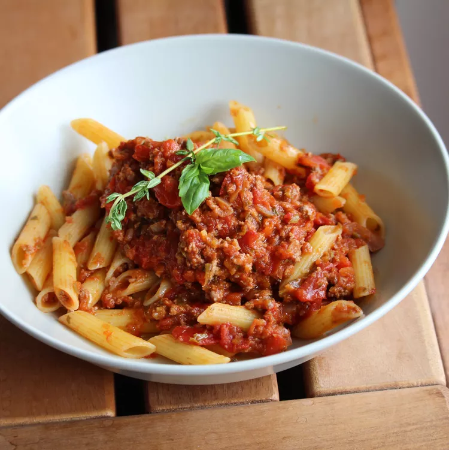

I have found myself making daily visits to Joseph's Classic Market these days and creating new recipes. Not only do we have amazing markets here in Palm Beach Gardens but our farmers markets are spectacular. I got 4 Cubanelle peppers and grilled 2 with our steak dinner. Looking at the remaining 2, this dish came to me. Enjoy with your favorite pasta, spaghetti squash, or sweet potato noodles.
